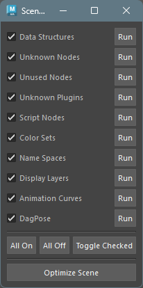

Scene Optimizer
How to Launch
Launch from the dedicated menu or with the following command.
import faketools.tools.common.scene_optimizer_ui.ui
faketools.tools.common.scene_optimizer_ui.ui.show_ui()
The text to the right of each checkbox describes the optimization process. To execute each individually, press the Run button.
To execute all at once, press the Optimize Scene button. Processes with checkboxes turned on will be executed.
Optimization Details
DataStructure
Deletes all DataStructure nodes that exist in the scene.
UnknownNodes
Deletes all unknown nodes that exist in the scene.
UnusedNodes
Deletes all unused nodes that exist in the scene.
UnknownPlugins
Deletes all unknown plugins that exist in the scene.
ScriptNodes
Deletes all script nodes that exist in the scene.
ColorSets
Deletes all color sets that exist in the scene.
DisplayLayers
Deletes all display layers that exist in the scene.
TimeAnimCurves
Deletes all time-dependent animation curves that exist in the scene.
UnusedInfluences
Deletes all unused influences that exist in the scene.
DeleteDagPose
Deletes all DAG poses that exist in the scene.